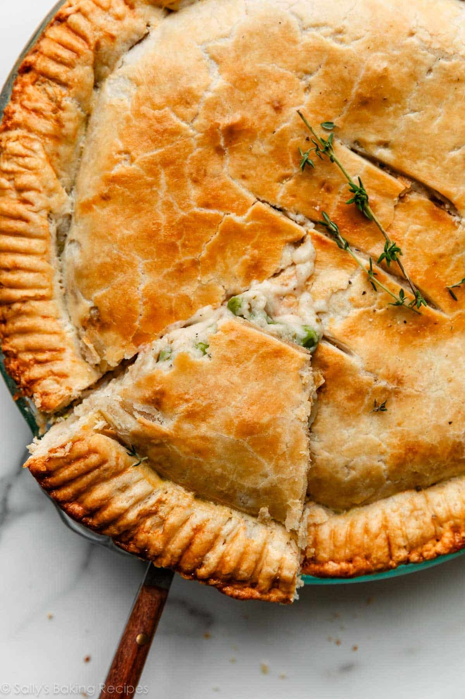

Chicken Pot Pie

A golden brown crumbly crust that just falls away on the tongue, giving way to the rich chicken and vegetable fillings that await; this delectable chicken pot pie recipe is a sure to bring you warmth inside and out!
Pot pies are a staple of midwestern American food culture. They are perfectly reflective of the diverse togetherness of the dinner table, where people and ingredients of all kinds come together to share in one precious meal. Just like with our households, no two pot pies look the same: these treasure chests of flavor come in all different shapes and sizes.
However, I like to keep things simple, classic. So, if you're like me and want to just stick to the basics, or you're just looking for a place to start building off into your own culinary self-expression, this amazing chicken pot pie recipe will be great for you!
Ingredients:
Amounts are up to preference
- Chicken (pre-cooked boneless/skinless breast)
- Carrots & Celery
- Butter, Onion, & Garlic
- Flour
- Seasonings (in our case, I'll be using salt, pepper, and thyme)
- Chicken Stock/Broth (may be substituted with vegetable broth/stock)
- Half-and-half
- Frozen Peas (and/or any other veggies you prefer!)
- Egg wash (1 egg mixed w/ 1 Tbsp milk)
Instructions:
- Steam the carrots and celery
- Saute onion and garlic in butter. Then, mix in flour, salt, pepper, and thyme until the moisture is soaked up
- Add in broth and half-and-half, and let simmer (stirring occasionally) until sauce is a thick, gravy-like consistency
- Roll out the first half of pie dough into a 12-inch circle, and fit it into your pie dish
- Add the cooked chicken and veggies, followed by the frozen peas, and pour/spread the gravy on top
- Roll out the second half of pie dough into a 12-inch circle, and lay it over the filling. Seal and crimp or flute the pie crust edges, then slice a few small slits in the top crust, to allow steam to escape, and apply egg wash on top
- Bake in a hot oven (425°F (218°C)) until golden brown